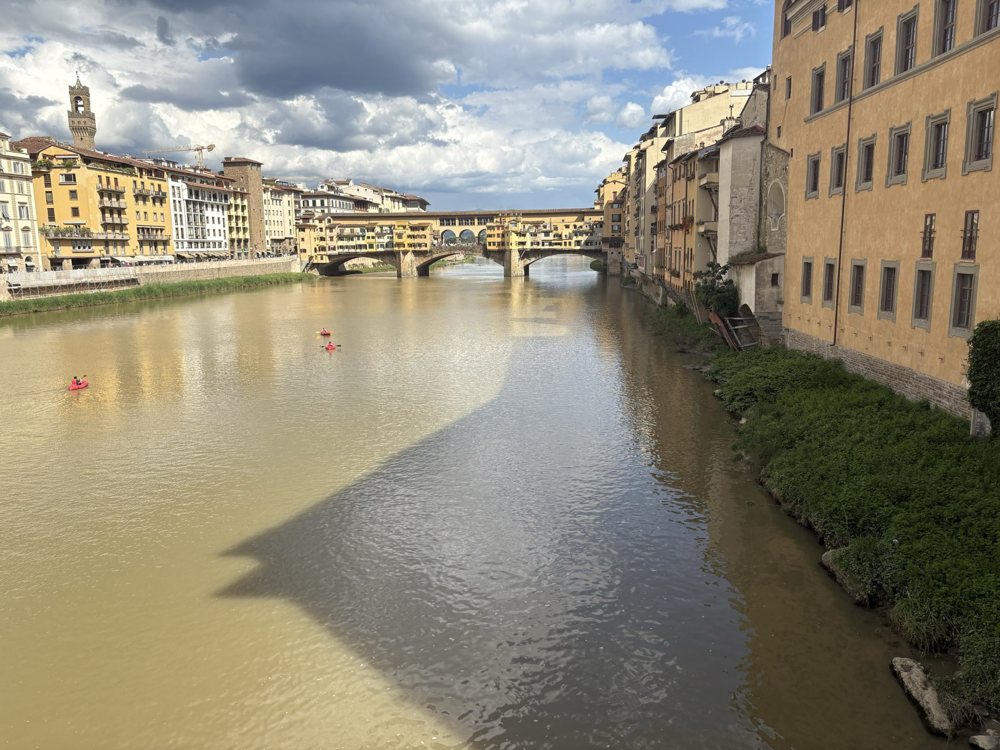

Cypress Path Above San Gimignano
Classic Tuscan cypresses framing rolling hillside light — timeless botanical calm for dining rooms and farmhouse-modern walls.
Destination Wall-Art Guide · Tuscany, Italy
Silver-green olive groves, cypress ridge trails, medieval towers of San Gimignano, sunlit Florence gardens, and marble Romanesque architecture in Pisa. Instant print-ready digital downloads from $8.

Earthy olive greens, limestone, and warm Italian afternoon light designed for kitchens, dining rooms, and welcoming living spaces.
Classic Tuscan cypresses framing rolling hillside light — timeless botanical calm for dining rooms and farmhouse-modern walls.

Layered hills, vineyards, and soft horizon haze — gives compact rooms instant visual depth and warmth.

Silvery olive foliage and terraced earth — an understated Mediterranean centerpiece for kitchens and wood-toned interiors.

Quiet rural expanse in balanced natural greens — pairs harmoniously in a diptych with the Cypress Path or Olive Grove.

Sun-warmed masonry and Tuscan sky — grounds a gallery wall with historic texture and crisp architectural edges.

Intimate Tuscan garden blooms cascading over warm plaster — brings organic color to entryways, bedrooms, and powder rooms.

Luminous white marble arcades in clean vertical symmetry — refined architectural study for minimalist living spaces.

Iconic Carrara marble tiering in bright Italian sun — crisp contrast for study walls and travel-inspired collections.
Instant digital downloads let you match frame dimensions and paper finishes to your exact room.
Tuscan foliage and travertine stone feel painterly on textured fine-art cotton paper (such as Arches or Hahnemühle William Turner) with an off-white mat.
Hang Cypress Path, Olive Grove, and Tuscan Valley View side-by-side in matching 12×16 in or 16×20 in warm walnut frames using the 6 MP ($28) files.
Want to test Tuscan light on your screen first? Our free Collector’s Note pack below includes a high-resolution San Gimignano desktop wallpaper.
Collector’s note
Get three high-resolution wallpapers from Andalusia, Tuscany, and Paris right away, plus an occasional note when a new series opens.
Your wallpapers are ready